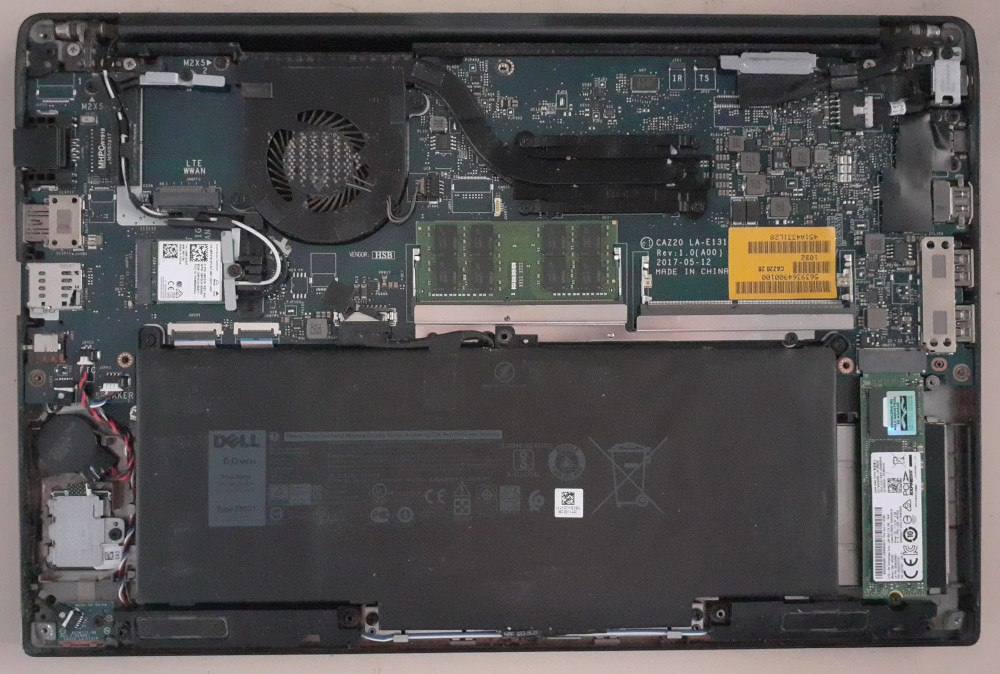

![An L-shaped desk with two laptops, an external monitor, a router and a third headless computer in a tower case with several power cables connected to a power strip on top of it. Next to the power strip are two cellphones, a long red box, and a charging case for Bluetooth headphones with a red LED on. The tower case has three stickers on it: one with the machine specifications, one the FreeBSD logo, and one reading “platform feodalism (sic) is so 1492”. Scattered around the machines are some office supplies, medicine containers, a screwdriver, a notepad, a small notebook, an NVMe SSD card on top of its packaging, a mug, a water bottle and a scarf. Hanging on the wall are a small painting of a dead tree before the twilight, prayer beads, a sunflower-pattern keychain and a calendar. Between the desk and the camera, a green plastic chair has a pillow and blanket on top of it. A few wires and cardboard boxes are visible under the desk.](../assets/img/posts/void-on-zfs/desk.jpg)
June is here. It brings the usual cold weather and some extra rhinitis complications. With that I find myself in a recovery mood Sunday, wrapped in a blanket with a mug of tea, a screwdriver, some notes on paper, a flash drive, a couple of NVMe cards and the trio of Unix-powered machines that will help me get this done.
The mission is to get a root-on-ZFS EFI installation of Void Linux with ZFSBootMenu on a Dell Latitude 7480.
To my left, a ceiling-collapse-survivor Sony VAIO is running NetBSD with spectrwm. It’s split with sakura and tmux on a terminal to one side, where Neovim is storing these words, and Firefox on the other, ready to fetch all the docs. In the middle, the object of today’s operation. And to my right, a headless PC board runs FreeBSD with ZFS, holding all the backups needed for the post-install tasks.
This lengthy post, written not after the fact but during it, is my way of documenting and also sharing how it all went. Additionally, it’s a way to delve deeper into many of the things the ZFSBootMenu docs leave unexplained, an urge I already had yesterday as I just tried it out without much modification.
Last night, I ran through the ZFSBootMenu documentation guide for Void and followed it both on a VM and then on an external SATA HDD plugged through a USB case, taking some notes and getting a general idea of the process.
The Void installer does not support ZFS out of the box, so the Void Handbook itself recommends the ZFSBootMenu documentation before its own (a manual chroot installation) when it comes to doing a ZFS-on-root install. This guide from ZFSBootMenu is what we’ll be following throughout this post.
Do note that, while comprehensive, my account is no replacement for the original guide. Although more concise, it contains certain notes not included in this post and covers a larger set of possibilities than I did here. Some of the code blocks you’ll see here are identical to the ones from the guide, but many others are specific to how I did things, so keep that in mind and try things before going with your final installation.
Why Void?
I don’t really enjoy distro-hopping. I usually will spend a few years on the same OS and only switch for good reason and after some thorough testing. And after some Debian time, I felt interested in trying Void for a few reasons:
- rolling, but stable
- runit init system
- BSD-like rc files
- BSD-like handbook documentation
- numerous, up to date, but stable packages
After trying it, some other features made me settle:
- fast and feature-packed package manager
- very fast startup time (kudos to runit)
- first-class support in ZFSBootMenu
The Void package manager, xbps, has several
interesting features. One of my favorites, for a taste, is
xbps-query --cat, which shows the original contents of a
given file in a package.
For example,
xpbps-query --cat /etc/zfsbootmenu/config.yaml zfsbootmenu
will show you the original content of the config.yaml file
in the zfsbootmenu package. You can use it for very core
packages like base-system or runit-void to
determine the original version of files shipped by them.
And why ZFS?
My first contact with ZFS was when using FreeBSD, which provides it as an option in its installer, making it a bit too easy not to try. Having a server on ZFS means all the data it holds can be safeguarded and transferred in robust ways, and mistakes are also easier to recover from.
Aside from all the data integrity features and flexibility it brings, the features that interest me the most are the ones for managing snapshots.
ZFS snapshots allow you to store the filesystem state at a given point in time, and to compare against, access the content of, and fully revert to this state. After the guide has been followed throughout, an extra section at the end of this post has some snapshot basics.
Getting in
So, first things first, open the machine up and swap the NVMe cards. For me, that means getting my 128 GB NVMe stick, which I use basically for tests, and replace it with the 256 GB one which currently has Debian on it. Yes, I get by just fine with that much.
While a bit dusty, the machine was overall in good state. The release date for the model is 2017, which for my computing standards is very recent.
It has a single NVMe slot, one 16 GB RAM stick and one unused RAM slot. If you look closely, you can notice a dent on the vent tube connecting the cooler to the CPU. Despite this, it very rarely heats up.

Next up is to boot up hrmpf in EFI mode.
hrmpf is a Void-based rescue system maintained by a Void team member and distributed as a bootable image that can accomplish many things, some of them being a full Void installation, entering a proper chroot, and being ZFS-ready with the needed drivers and tools.
Once booted into it, EFI support can be confirmed by filtering the
output of dmesg:
dmesg | grep -i efivarsThe output should contain “Registered efivars operations”.
Make sure you have an Internet connection at this point. Most of the following steps will run fine without one, but closer to the end, when installing the Void base system, it will all go to waste if we can’t reach a package mirror.
Setting up the installation environment
The ZFSBootMenu guide uses some variables in order to avoid mistakes and make the instructions more portable across the different storage types and supported operating systems.
/etc/os-release
The /etc/os-release file typically contains information
on the operating system you are running.
In the hrmpf live system, these are its contents:
NAME="Void"
ID="void"
PRETTY_NAME="Void Linux"
HOME_URL="https://voidlinux.org/"
DOCUMENTATION="https://docs.voidlinux.org/"
LOGO="void-logo"
ANSI_COLOR="0;38;2;71;128;97"
DISTRIB_ID="voidFor comparison, here is FreeBSD’s os-release file:
NAME=FreeBSD
VERSION="14.0-RELEASE"
VERSION_ID="14.0"
ID=freebsd
ANSI_COLOR="0;31"
PRETTY_NAME="FreeBSD 14.0-RELEASE"
CPE_NAME="cpe:/o:freebsd:freebsd:14.0"
HOME_URL="https://FreeBSD.org/"
BUG_REPORT_URL="https://bugs.FreeBSD.org/"In contrast, NetBSD has no such file.
For the purposes of the ZFSBootMenu guide, only the $ID
value appears to be used. And because the file already is structured as
shell-compatible variable assignments, we just source it:
source /etc/os-release
export IDhostid
Required by ZFS intallations, a host ID is a 32-bit hexadecimal value that, supposedly, will uniquely identify a machine. Considering the number of existing machines and the 32-bit range, you might guess why I say supposedly.
If your machine has the hostid utilities, you can see
the host ID by simply running hostid. Prior to generation,
my hrmpf live system reports 00000000.
It can’t provide a real guarantee that it will be unique, so it’s up to you to take care that it is unique among your machines. Read on for why that’s hardly an issue.
From the gethostid(3) man page:
[…] a unique 32-bit identifier for the current machine. The 32-bit identifier was intended to be unique among all UNIX systems in existence. This normally resembles the Internet address for the local machine, as returned by
gethostbyname(3), and thus usually never needs to be set.
This seems to be more or less a legacy feature. In Void’s man page
for gethostid(3), you see this in the history section:
4.2BSD; dropped in 4.4BSD. SVr4 and POSIX.1-2001 include gethostid() but not sethostid().
Still, it is something that OpenZFS requires to be set:
At time of import or creation, the pool stores the system’s unique host ID and for the purposes of supporting multipath, import into other systems will fail unless forced.
— OpenZFS docs, Introduction to ZFS: Storage pools
zgenhostid, which is shipped by OpenZFS, according to
its man page “emulates the genhostid(1) utility and is
provided for use on systems which do not include the utility or do not
provide the sethostid(3) function.”
When used without arguments, these commands will generate a random
host ID. But they can also be passed a hexadecimal value, which gets
stored by default in /etc/hostid unless another path is
given with -o.
Considering this information, it threw me off a bit that the ZFSBootMenu guide tells you to specify an arbitrary host ID rather than generate a random one:
zgenhostid -f 0x00bab10cIf they must be unique, that seems odd.
The value 0x00bab10c actually has significance in the
context of OpenZFS as an identifier (and leetspeak) for its uberblock.
However, it apparently is totally unrelated to host IDs.
Should you be curious still, you can refer to this GitHub discussion where a ZFSBootMenu user brought this exact question to the developers.
According to the answer given above, the uniqueness of host IDs is useful for “multipathed SAS enclosures with two discrete head unis attached”, which is an enterprise-grade storage solution.
The value 0x00bab10c is indeed unrelated and chosen for
easy identification. Any value may be used, but when using the pre-built
ZFSBootMenu images it may make the process slightly slower (around
250ms) as ZFSBootMenu will have to “discover the hostid every boot”.
Disk variables
Here too, the ZFSBootMenu guide works with a set of variables to make it easier covering different possible storage types:
BOOT_DISK,BOOT_PARTandBOOT_DEVICEPOOL_DISK,POOL_PARTandPOOL_DEVICE
My target device is an NVMe at nvme0n1, so I’ll
have:
BOOT_DISK="/dev/nvme0n1"BOOT_PART="1"BOOT_DEVICE="${POOL_DISK}p${POOL_PART}"- which evaluates to
/dev/nvme0n1p1
- which evaluates to
POOL_DISK="/dev/nvme0n1"POOL_PART="2"POOL_DEVICE="${POOL_DISK}p${POOL_PART}"- which evaluates to
/dev/nvme0n1p2
- which evaluates to
While this may seem silly at first, it allows using the values separately in the next steps. It also makes the docs a lot more concise while covering several possible disk setups.
Confirming the environment setup
At this point, we should be able to print something like this in our environment:
# env | grep ID
ID=void
# hostid
00bab10c
# echo $BOOT_DEVICE
/dev/nvme0n1p1
# echo $POOL_DEVICE
/dev/nvme0n1p2Take care to keep this same environment for all the next steps as they depend on it. For instance, the hrmpf live system ships tmux. While that is great and I have used it throughout, you must be careful to use a single pane for all the actual steps, and the other panes just for secondary things like looking up man pages or checking file contents.
Filesystem setup
Wiping
The first step is to clear the current ZFS label information from the device:
zpool labelclear -f "$POOL_DISK"The -f option will “treat exported or foreign devices as
inactive”, per the man page.
This step fails consistenly for me, which I assume is because the previous filesystem was not ZFS to begin with.
Next, we will use wipefs to erase the current filesystem
signature.
This command is not ZFS-specific, but part of the kernel utilities. It does not erase the filesystems themselves, nor their content, but the signatures that aid in their detection.
Without any options, it will list all the filesystems that are still visible:
# wipefs "$BOOT_DISK"
DEVICE OFFSET TYPE UUID LABEL
nvme0n1 0x200 gpt
nvme0n1 0x3d9e655e00 gpt
nvme0n1 0x1fe PMBRThe -a option is for erasing all signatures. This means
it will “scan the device again after each modification until no magic
string [signature] is found”, as per its man page.
In my case:
wipefs -a "$POOL_DISK"
wipefs -a "$BOOT_DISK"Along the guide, commands are sometimes repeated for both
$POOL_DISK and $BOOT_DISK. If you are using
the same disk for both, this may be redundant, although also
harmless.
This is my case, so I am not typically running it twice. I’ll still leave it as is however, so as not to mislead the reader.
Now, when listing the signatures again with
wipefs "$BOOT_DISK", there should be no output.
Finally, the current MBR and GPT tables must be destroyed. For this,
the ZFSBootMenu guide uses sgdisk. This is also not
ZFS-specific.
sgdisk --zap-all "$POOL_DISK"
sgdisk --zap-all "$BOOT_DISK"The --zap-all option contrasts with --zap
in that it will destroy both MBR and GPT partition tables.
Partitioning
In the ZFSBootMenu guide, sgdisk is used again for
creating the partitions:
sgdisk \
-n "${BOOT_PART}:1m:+512m" \
-t "${BOOT_PART}:ef00" "$BOOT_DISK"
sgdisk \
-n "${POOL_PART}:0:-10m" \
-t "${POOL_PART}:bf00" "$POOL_DISK"In the commands above, option -n is short for
--new, and is specifying the start and end sectors by using
relative kibibyte measures. The format is
--new partnum:start:end.
Breaking it down:
1m1 mebibyte from the start of the disk+512m512 mebibytes after the default start sector-10m10 mebibytes before the last available sector0the default value
In the list above, “default” is “the start of the largest available
block for the start sector and the end of the same block for the end
sector”, as per the sgdisk man page.
1:1m:+512m, therefore, means that partition 1 will start
1 mebibyte from the start of the disk and end 512 mebibytes after the
start of the largest available block.
2:0:-10m, in turn, means partition 2 will begin at the
start of the largest available block and end 10 mebibytes before the
last available sector.
Option -t is for setting the typecode for each
partition. Typecode ef00 is for the EFI system partition,
and typecode bf00 is for “Solaris root”, the Unix system
upon whose ZFS implementation OpenZFS was based.
For a list of typecodes, see sgdisk -L.
While just running these commands as-is is your safest option, you might have a different layout in mind or prefer an interactive UI.
For one thing, I’ve had issues in the past with the boot partition
being too small, so I’ll be using 2g instead of
512m for it.
sgdisk has a friendlier counterpart named
gdisk, which you can use just by passing it the disk path,
as in gdisk /dev/sda.
At this point, you should be safe to try partitioning and going back to wiping as needed until you are satisfied.
When you are done, you can use lsblk to confirm the
results. The following will show you the options just configured:
lsblk -o NAME,SIZE,TYPE,PARTTYPENAMECreating the pool
This part of the guide was the one that actually made me want to delve deeper and understand what each option meant.
With little knowledge about ZFS still, I wanted to understand precisely what was happening here, but also what a pool even is and what its creation meant.
Here’s the zpool(8) man page:
A storage pool is a collection of devices that provides physical storage and data replication for ZFS datasets. All datasets within a storage pool share the same space.
The definition of a dataset is then indicated to be at
zfs(8):
A dataset is identified by a unique path within the ZFS namespace:
pool[/component]/componentfor example:rpool/var/log
Here, it’s also explained that a dataset can be a file system, logical volume, snapshot or bookmark.
Further information is also hinted to be found at
zpoolconcepts(7).
At this point you start to notice the breadth of knowledge available
in the documentation. The man pages are not only comprehensible, but
sometimes contain several examples on how to apply their concepts. Each
command has their own man page named with a hyphen for separation, as in
zpool-create.
We’ll be exploring only the zpool-create(8) command in
depth, in particular the options used in the ZFSBootMenu guide:
-fforce the use of virtual devices, even if they appear in use-o feature=valueset a pool feature-O property=valueset a file system property in the root file system of the pool-o compatibility=off|legacy|file[,file]specify a compatibility feature set-m mountpointthe mountpoint (default:/pool)poolthe poolvdevthe virtual device
The listing with pool features (including compatibility feature sets)
is at zpool-features(7). Pool properties are at
zpoolprops(7) and file system properties at
zfsprops(7).
In the guide, these are the options given:
zpool create -f \
-o ashift=12 \
-O compression=lz4 \
-O acltype=posixacl \
-O xattr=sa \
-O relatime=on \
-o autotrim=on \
-o compatibility=openzfs-2.1-linux \
-m none zroot "$POOL_DEVICE"Among the options above, several pool features and system properties are set:
-o ashift=12“Alignment shift”, used to calculate physical sector sizes.This is discussed at greater length in the online documentation on Workload Tuning-O compression=lz4Sets the compression algorithm used (LZ4)-O acltype=posixaclWhether ACLs are enabled and what type to use. The valueposixaclis equivalent toposix(default on Linux: off)-O xattr=saEnables extended attributes. If value ison, uses directory-based extended attributes, whilesauses system-attribute-based. The latter has performance benefits, and is important for ACLs and SELinux usage-O relatime=on“Causes the access time to be updated relative to the modify or change time.” Also, “access time is only updated if the previous access time was earlier than the current modify or change time or if the existing access time hasn’t been updated within the past 24hours” (default: on)-o autotrim=onAutomatically reclaims unused blocks from time to time. Can put the filesystem under some stress
The last option, the compatibility feature set, specifies in this
case a relative filename to
/usr/share/zfs/compatibility.d:
-o compatibility=openzfs-2.1-linux
zpool-create(8) also states:
By default, all supported features are enabled on the new pool. The
-doption and the-ocompatibility property […] can be used to restrict the features that are enabled, so that the pool can be imported on other releases of ZFS.
The compatibility option openzfs-2.1-linux is described
as a “conservative” choice in the ZFSBootMenu guide and in my tests had
little impact, so I decided to not use it for this installation.
Creating the filesystems
Once the pool is ready, the filesystems can be created.
For this task, the zfs command is used with
create:
zfs create -o mountpoint=none zroot/ROOT
zfs create -o mountpoint=/ -o canmount=noauto zroot/ROOT/${ID}
zfs create -o mountpoint=/home zroot/homeThe ZFSBootMenu guide explains at this point that if
canmount=noauto is not set on file systems with the
/ mountpoint, the OS will try to mount them all and fail.
It goes on to say:
Automatic mounting of / is not required because the root file system is explicitly mounted in the boot process.
After the filesystems have been created, the boot file system must be set.
zpool set bootfs=zroot/ROOT/${ID} zrootEssentially, this is saying “set zroot’s
bootfs property to zroot/ROOT/void”
Export, reimport and mount
The next steps consist in exporting and then importing the pool with a given mountpoint.
zpool export zroot
zpool import -N -R /mnt zrootFrom what I gather, exporting means putting the pool in a more
portable state. According to the zpool-export(8) man page,
“the devices [marked as exported] can be moved between systems […] and
imported as long as a sufficient number of devices are present.”
If zfs import is used without any arguments, it will
list the exported pools available to be imported.
The -N root option imports the pool without mounting any
of its file systems, and the -R option “sets the
cachefile property to none and the
altroot property to root”. In this case, that
root will be /mnt.
altroot stands for the alternate root directory. In
zpoolprops(7), this becomes clearer when it is stated that
“this directory is prepended to any mount points within the pool.”
Once re-imported, we can mount:
zfs mount zroot/ROOT/${ID}
zfs mount zroot/homeAnd verify that all is mounted correctly with
mount | grep mnt:
# mount | grep mnt
zroot/ROOT/void on /mnt type zfs (rw,relatime,xattr,posixacl,casesensitive)
zroot/home on /mnt/home type zfs (rw,relatime,xattr,posixacl,casesensitive)Lastly, we request the device events from the kernel to update the device symlinks:
udevadm triggerSetting up Void
Installation
So far, not much here was Void-specific. This is when we start bootstrapping the void system into the filesystem we laid out.
XBPS_ARCH=x86_64 xbps-install \
-S -R https://repo-fastly.voidlinux.org/current \
-r /mnt base-systemHere, we are passing an environment variable to set the architecture
to x86_64, then use xbps-install from the xbps
package manager to fetch the Void base system.
-S takes care of synchronizing the data from the mirror
so that package data is fetched, -R allows us to manually
specify the repository for this run, and -r allows choosing
a different root directory.
Here, I chose the Fastly mirror over the ServerCentral one. Any working mirror should do.
Note that not all mirrors have the same directory structure. You can
access the mirror in a browser or otherwise inspect it to find the path
to the current directory.
With this done, we can copy the host ID file, which will also be required in our final system, and we are ready to chroot.
cp /etc/hostid /mnt/etcchrooting
We will chroot into the system mounted at the /mnt
directory using xchroot, which is part of the xbps
xtools package and should already be available on hrmpf. It
provides a more
sane chroot than the plain one, in particular regarding the required
mountpoints:
xchroot /mntThis is a good time to get back to the notes I mentioned taking the day before.
Reconfiguring packages
After chrooting, it might be a good idea to run
xbps-reconfigure to make sure packages are properly
configured. This is because in the bootstrap process some packets may
have tried to configure themselves while relying on directories that
were not mounted anywhere.
This is particularly true for dracut,
which is a tool that generates initramfs and initrd images, therefore
being critical to the early boot process. You might see error messages
related to it in your first run of xbps outside of the chroot, when
installing the base system.
To reconfigure all packages, just run
xbps-reconfigure -fa. If you’d rather only reconfigure
dracut, go with
xpbs-reconfigure -f dracut.
root password
As early as possible is a good time to run passwd and
set the root password.
rc.conf
runit reads the /etc/rc.conf during startup
to configure the system, setting up things like the keymap, hardware
clock and terminal font.
For your reference, here is what I added to mine during the installation:
HARDWARECLOCK="UTC"
KEYMAP="br-abnt2"
FONT="ter-120n"Time zone and locale
To configure your local time zone, create a symlink at
/etc/localtime that points to the corresponding time zone
in the /usr/share/zoneinfo directory.
ln -sf /usr/share/zoneinfo/<timezone> /etc/localtimeUnless you are using musl, you also want to set and
generate the glibc locales. Edit
/etc/default/libc-locales and uncomment the desired
locales, then run xbps-reconfigure -f glibc-locales
dracut
dracut generates file system images used by the kernel
at the very early stages of boot. We have to make it able to identify
our ZFS root filesystem by enabling the proper modules. This is
accomplished by editing /etc/dracut.conf.d/zol.conf to:
nofsck="yes"
add_dracutmodules+=" zfs "
omit_dracutmodules+=" btrfs "Notice the spaces surrounding the module names
Installing and configuring ZFSBootMenu
We are now ready to install both ZFS and ZFSBootMenu. Let’s start with ZFS:
xbps-install -R https://repo-fastly.voidlinux.org/current zfsNow, before installing ZFSBootMenu, we set the kernel commandline. This is the command line that will be used by the Linux kernel, so any options you are used to go here.
The ZFSBootMenu guide has only the quiet option. In my
case, I added net.ifnames=0 to have the classic
eth0, wlan0 network interface names, and
fbcon=nodefer video=efifb:nobgrt, which prevents the
manufacturer’s logo from showing after boot and sometimes obscuring the
boot process output.
zfs set org.zfsbootmenu:commandline="quiet net.ifnames=0 fbcon=nodefer video=efifb:nobgrt" zroot/ROOTWe also need a vfat filesystem on our boot device:
mkfs.vfat -F32 "$BOOT_DEVICE"And an /etc/fstab entry and mount:
echo "$(blkid | grep "$BOOT_DEVICE" | cut -d ' ' -f 2) /boot/efi vfat defaults 0 0" >> /etc/fstab
mkdir -p /boot/efi
mount /boot/efiInto this directory we just mounted, we can now install ZFSBootMenu.
The guide provides two different paths here: a prebuilt image or the Void package, which you can get through xbps.
While there are advantages to both, I decided to go with the prebuilt image since I’d rather the package manager not touch the boot manager on updating. This has the downside of you having to take care of being aware of any relevant versions and when to upgrade to them.
xbps-install curl
mkdir -p /boot/efi/EFI/ZBM
curl -o /boot/efi/EFI/ZBM/VMLINUZ.EFI -L https://get.zfsbootmenu.org/efi
cp /boot/efi/EFI/ZBM/VMLINUZ.EFI /boot/efi/EFI/ZBM/VMLINUZ-BACKUP.EFIIf you’d rather use the repository package, see the corresponding instructions in the guide.
Finally, a second choice has to be made between rEFind
or plain efibootmgr for managing the boot entries. I prefer
to go with the simpler one, but you may find rEFind more
feature-packed.
First, install efibootmgr using
xbps-install efibootmgr, then run the following
commands:
efibootmgr -c -d "$BOOT_DISK" -p "$BOOT_PART" \
-L "ZFSBootMenu (Backup)" \
-l '\EFI\ZBM\VMLINUZ-BACKUP.EFI'
efibootmgr -c -d "$BOOT_DISK" -p "$BOOT_PART" \
-L "ZFSBootMenu" \
-l '\EFI\ZBM\VMLINUZ.EFI'If you’d prefer to use rEFInd, see the guide’s relevant section.
zbm-kcl is mentioned here in passing. This utility
allows you, among other things, to set ZFSBootMenu options, such as the
delay before automatically booting. I am not sure if it comes included
with the ZFSBootMenu package, as I went for the pre-built image, but you
can nonetheless get it from GitHub:
curl -O https://raw.githubusercontent.com/zbm-dev/zfsbootmenu/master/bin/zbm-kcl
chmod +x zbm-kclNow, if you want to change an option, you can use its -a
option to append an argument to the target image’s command line:
zbm-kcl -a 'zbm.timeout=2' /boot/efi/EFI/ZBM/VMLINUZ.EFIIn the example above, the timeout before automatically booting is set from its 10 seconds default to 2 seconds.
Getting out
We are all done. It’s time to exit the chroot, unmount and export the pool.
exit
umount -n -R /mnt
zpool export zrootIf all above went well, we can now run reboot, remove
the flash drive used for installation, and log in for the first time
into our new system.
ZFS snapshot basics
Something you might want to do at this point is to take a snapshot of the current state, since it can serve as a baseline before any further tweaking, allowing you to go back or access the files in this state as you make important changes that could potentially break the system.
zfs snapshot -r zroot/ROOT/void@baselineNote that, if you followed the ZFSBootMenu guide in creating a
separate dataset for your home directory, this snapshot will not include
the contents inside and under /home
You can access the contents of a snapshot at any time in the
.zfs directory at the root of a given dataset. For the ones
we previously set up, those would be /.zfs and
/home/.zfs. Note that these directories are not only hidden
in the traditional way, but they won’t show up even if you use
ls -a. You need to actually cd into the
apparently absent directory for it to work.
ZFS snapshots start taking virtually no space at all, but grow with time as the snapshot drifts from the present system state. For that reason, keeping a snapshot of the very first moment of your system can take up significant space. Depending on your storage resources, you might eventually decide to destroy this snapshot:
zfs destroy -r zroot/ROOT/void@baselineYou may also want to list your current snapshots. While typically you
can use zfs list -t snap, I tend to use the following
command in order to get more relevant output:
zfs list -t snap -o creation,name,used,written,referenced,refcompressratio -S creationFinally, you might want to rename a snapshot:
zfs rename -r zroot/ROOT/void@baseline @day0Combined, these commands can get you as far as an automatic, rolling
snapshot system. Say, for instance you add the following to
rc.local:
zfs destroy -r zroot/ROOT/void@fallbackBoot
zfs rename -r zroot/ROOT/void@previousBoot @fallbackBoot
zfs rename -r zroot/ROOT/void@currentBoot @previousBoot
zfs snapshot -r zroot/ROOT/void@currentBootThis would give you a per-boot snapshot trail to rely on.
The zfs-snapshot(8) man page provides a similar example
for daily snapshots. Considering how simple the zfs CLI is, scripting
several snapshot schemes can be quite easy, be them per boot, daily, or
even every so many minutes using cron. Because ZFS snapshots grow as
they drift from the present state, rotating them is optimal when
conserving storage space.
That’s it! I hope this was helpful to you in either learning about ZFS or about Void installations with Root on ZFS.
Originally written June 2nd, 2024